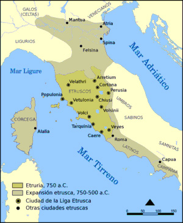
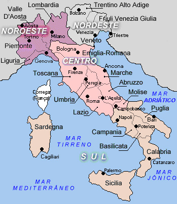
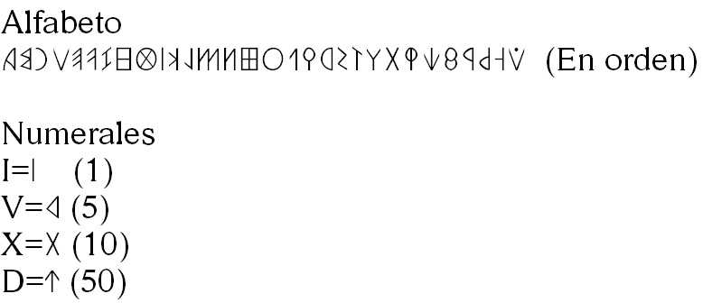
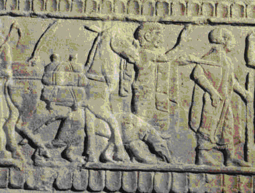
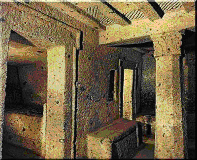
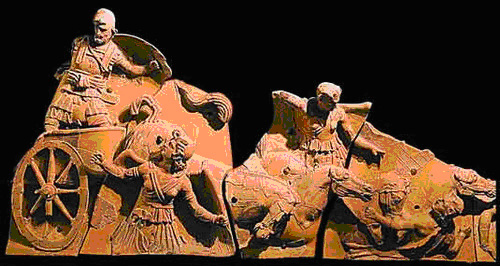
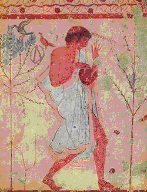
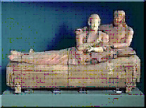
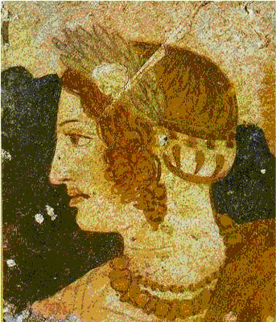

|
|
Etruscos - A cultura que
Roma destruiu
por
Talita Luz Vieira

Mapa
em que podemos ver o imp�rio etrusco em seu m�ximo esplendor. A
principal col�nia grega da regi�o � Pitecusa. Se encontrava na
ilhazinha em frente a col�nia grega C�pua.

Mapa
atual da antiga Etr�ria � hoje Toscana,
It�lia.
A
civiliza��o etrusca dominou boa parte da Pen�nsula It�lica
at� se render ao jugo romano. As necr�poles da regi�o de
Toscana contam sua hist�ria e os geneticistas tentam descobrir se os
etruscos deixaram descendentes.
Quando os antigos
gregos, em sua aventura de expans�o comercial e colonizadora,
aportaram, no in�cio do s�culo VIII a.C., nas costas do
Mediterr�neo, onde hoje � a It�lia, esta era considerada uma regi�o
b�rbara. Por isso, os refinados helenos se surpreenderam ao
encontrar um povo curioso cuja civiliza��o se mostrava bem avan�ada.
Mais especialmente, ficaram impressionados com a pirataria que eles
praticavam. Os gregos chamaram esse povo de Tirreno e com esse nome
ficaram conhecidos os etruscos na Antig�idade. Naquela �poca, eles
ainda viviam em aldeias, n�o conheciam a escrita, e possu�am uma
arte rudimentar, diz o arque�logo Norberto Guarinello, da
Universidade de S�o Paulo, autor de uma extensa pesquisa sobre a
cer�mica etrusca. Mas muito rapidamente foram se desenvolvendo e
expandindo seus territ�rios at� conquistar
Roma.
A presen�a dos tirrenos
num mundo onde predominava a civiliza��o grega, levantou algumas
quest�es. A principal, e que inquietou v�rias gera��es de
historiadores, �: afinal, de onde vinham os etruscos? Foi Dion�sio
de Halicarnasso, historiador grego, quem mais se preocupou em
averiguar as ra�zes daquele povo enigm�tico.
No s�culo I a.C., ele
escreveu Antiguidades romanas, no qual expunha as diferentes
hip�teses que conhecia sobre a origem dos etruscos: umas apontavam
para suas ra�zes orientais e outras, como a do historiador grego
Her�doto, afirmavam que eles teriam vindo da L�dia, na �sia Menor, e
se misturado aos aut�ctones. Finalmente, Dion�sio formula sua
pr�pria teoria: � poss�vel que os que mais se aproximem da verdade
sejam os que declaram que este povo n�o veio de lugar algum, �
aut�ctone, pois � muito antigo e sua l�ngua e forma de vida n�o
coincide com nenhuma outra civiliza��o.
Estava lan�ada a
pol�mica: havia conjecturas para todos os gostos e estas foram
engrossando com o correr dos s�culos. Entre elas, a de que teriam
vindo da Europa central, da regi�o do Dan�bio. A mais original,
entretanto, fala de uma cultura etrusca, em vez de povo etrusco.
Para os defensores dessa teoria, a mais aceita pelos etrusc�logos
hoje, a Etr�ria n�o significa necessariamente uma na��o, mas uma
cultura comum, uma l�ngua, uma religi�o. No entanto, vez ou outra se
trope�a numa quest�o importante: o idioma. O n�mero de textos �
pequeno e nada se sabe sobre a origem da l�ngua, pois ela n�o �
aparentada a nenhuma outra. Por�m, d� para ler e identificar os
verbos, os substantivos e os adjetivos, diz o professor Guarinello.
Em seu livro Etruscologia, o historiador italiano Massimo Palottino
revela que os sinais do alfabeto etrusco foram identificados no
s�culo XVII e em princ�pios do s�culo XIX foram comparados ao
alfabeto grego e ao latino. Tamb�m � certo que durante o s�culo VII
a.C. os etruscos tinham adotado um alfabeto grego com 26 caracteres.

Mesmo sendo um povo de
origens incertas, sua hist�ria � contada pelas necr�poles que
deixaram. A Etr�ria desenvolveu-se na It�lia central, a oeste da
Cordilheira dos Apeninos, basicamente onde hoje � a Toscana. Seu
territ�rio se limitava ao norte pelo Rio Arno, a leste e sul pelo
Rio Tibre e a oeste pelo Mar Tirreno, assim chamado porque era com
esse nome que se denominava os etruscos. O in�cio do desenvolvimento
de sua cultura singular, distinta da do restante de seus vizinhos da
Pen�nsula It�lica, remonta a meados do s�culo VIII a.C. Depois da
chegada dos gregos, as aldeias etruscas acabaram se transformando em
cidades, e tiveram como base a estrutura das cidades-Estado, como na
Gr�cia.

Arte etrusca �
vida comercial.
Esse processo de
urbaniza��o das aldeias foi lento e demorado, mas alguns fatores
favoreceram a expans�o da cultura etrusca como a chegada � regi�o de
uma enorme quantidade de comerciantes vindos de al�m-mar,
facilitando o surgimento de um mercado. Entre eles, estavam os
sardos, atra�dos pelo ferro da Ilha de Elba e os navegadores
procedentes do Mar Egeu e das costas asi�ticas: gregos
principalmente. A princ�pio, eles criaram pequenos portos no sul da
pen�nsula e mais tarde formaram aut�nticas col�nias, como a de
Cumas, em 725 a.C., na Ba�a de N�poles. O que os gregos queriam, na
verdade, era estabelecer col�nias ao norte, onde havia um mercado
promissor, mas sabiam que seria dif�cil, pois a popula��o local,
formada por etruscos e latinos, era bastante numerosa para ser
expulsa. Al�m disso, os povoados, sempre em lugares altos e pr�ximos
� costa eram fortemente defendidos.
Nesse caso se inclu�a o
cor�ntio Demarato, que viveu e fez fortuna na cidade de Tarqu�nia.
Seu filho seria eleito rei de Roma, em 616 a.C., com o nome de L�cio
Tarqu�nio, ou Tarqu�nio, o Velho. � claro que o fen�meno da
urbaniza��o n�o se produziu de uma s� vez. Segundo alguns registros
hist�ricos, Roma teria surgido em 753 a.C. essa � a data mais
aceita, embora com ressalvas, e nessa mesma �poca os etruscos
fundaram Veio, Cere, Tarqu�nia e Vulci. Depois, no final do mesmo
s�culo, seriam criadas Populonia, Vetulonia e, talvez Orvieto. No
s�culo VII a.C. se consolidariam Volterra e, possivelmente Cortona,
enquanto Arezzo e Chiusi se constituiriam como cidades propriamente
ditas na transi��o do s�culo VII ao VI a.C. Foi exatamente essa a
�poca de maior esplendor e m�xima expans�o da civiliza��o etrusca,
quando tamb�m Roma se tornou etrusca. A essa altura, os tirrenos
eram os senhores de boa parte da pen�nsula, na �rea que se estendia
da Campania, no sul, at� o Vale do P�, ao norte.
 Interior de uma
constru�s�o etrusca.
N�o se sabe ao certo
como se deu esse processo expansionista. Sabe-se ter existido uma
esp�cie de liga de doze cidades principais: Tarqu�nia, Cere, Veio,
Vulci, Volsini e Vetulonia eram algumas delas. Tudo indica que se
reuniam uma vez ao ano para celebrar um festival religioso. Por�m,
n�o se pode afirmar com seguran�a que tenham juntado seus recursos
para fundar uma federa��o que servisse de base ao poder etrusco. �
pouco prov�vel tamb�m que sua organiza��o naval e b�lica tivesse
tido em algum momento o respaldo adequado para manter com sucesso um
imp�rio territorial diante de poss�veis inimigos. Assim, depois de
r�pido florescimento no s�culo VII a.C. e um breve e brilhante
per�odo de expans�o imperialista durante o s�culo VI a.C., seguiu-se
uma s�rie de insucessos iniciados com sua expuls�o de Roma em 509
a.C. Com isso ca�ram as rotas de comunica��o por terra entre a
Etr�ria e a Campania.
O poderio naval etrusco
tamb�m sofreu um dur�ssimo golpe algum tempo depois, quando, em 474
a.C., seus navios, aliados com a frota cartaginesa, enfrentaram os
gregos condu-zidos por Hieron de Siracusa , e foram destro�ados na
batalha de Cumas. Mais adiante foram expulsos de C�pua e de outras
cidades do sul. At� que finalmente, em 400 a.C., tamb�m perderam as
cidades do norte para os gauleses. Ao mesmo tempo, os romanos
marchavam sobre o centro da pen�nsula, conquistando as cidades
etruscas. No s�culo V a.C., Veio foi destru�da e no decorrer do
s�culo IV a.C., toda a Etr�ria capitulou. Em 270 a.C., j� era parte
da federa��o romana.

Exemplar da arte etrusca
em terracota.
Sem d�vida, surgia um
novo mundo no qual a Etr�ria tinha de se integrar, ainda que
sacudida por rebeli�es contra a nova ordem estabelecida. Se durante
o s�culo III a.C. Roma fundou col�nias em pleno territ�rio etrusco,
como Cosa ou Castro Novum, e lenta, mas implacavelmente foi
introduzindo a l�ngua e os costumes romanos, o processo de
romaniza��o da Etr�ria recebeu o golpe definitivo em 90 a.C., quando
a Lei J�lia converteu em cidad�os romanos todos os it�licos. A
partir de ent�o se tornaria muito dif�cil e complicado separar o
etrusco da hist�ria romana.
Era o fim de um povo
alegre e amante dos prazeres, que procurava a felicidade na vida
cotidiana. Ao menos � a impress�o que se tem ao examinar as pinturas
das tumbas etruscas, especialmente as datadas dos s�culos VIII a V
a.C., que retratavam banquetes, jogos atl�ticos e homens pescando e
mergulhando no mar. Da� em diante, as cenas s�o deprimentes, com
representa��es do inferno povoado de dem�nios e de mulheres aladas
com caras de animais. Essa impress�o de felicidade durante o apogeu
fez com que o escritor ingl�s D. H. Lawrence (1885-1930), autor do
cl�ssico O amante de Lady Chaterley, refletisse assim sobre os
etruscos: �N�o se pode bailar
alegremente ao som da flauta e ao mesmo tempo conquistar na��es e
ganhar grandes somas de dinheiro�. Essa descri��o, por�m, n�o �
totalmente correta.
 Arte etrusca.
Na realidade, os
etruscos foram bons administradores e eficientes homens de neg�cios,
capazes de fabricar produtos de alto n�vel t�cnico, embora talvez
n�o reunissem as condi��es necess�rias para se manter no poder. Seja
como for, o certo � que, al�m do ferro, algumas cidades
manufaturavam objetos de bronze, tradi��o que veio do Oriente. Nelas
tamb�m se plantava trigo e se produziam vinho e azeite de oliva,
coisas que aprenderam com os gregos. Al�m disso, tinham grande
produ��o artesanal de barcos, cordas, velame para navios, e
cer�mica. Eles sempre foram grandes ceramistas e produziam uma
cer�mica negra, semelhante � porcelana chinesa. At� hoje n�o se
descobriu � t�cnica que eles usavam.
Cultura
Os etruscos foram tamb�m
not�veis construtores de cidades. Marzabotto, pequena vila pr�xima a
Bolonha, na atual regi�o da Emilia-Romagna, tinha uma ampla rua
principal cruzada por v�rias vias secund�rias que se estendiam em
quadras, esquema que foi mais tarde copiado pelos romanos. Por�m, se
as caracter�sticas urban�sticas desenvolvidas pelos vivos s�o
admir�veis, o universo de pedra que criaram para os mortos �
surpreendente. Os cemit�rios etruscos chegavam, em algumas ocasi�es,
a configurar-se como aut�nticas cidades, a ponto de o escritor
italiano Curzio Malaparte (1898-1957) afirmar: As verdadeiras
cidades dos etruscos s�o as necr�poles. As cidades dos vivos n�o
eram sen�o sub�rbios das dos mortos.
Tudo isso revela uma
grande preocupa��o pela vida al�m da morte e obviamente a exist�ncia
de ritos f�nebres complexos. De fato, quando morria um personagem
not�vel, seu corpo era exposto em algum lugar da necr�ple durante
v�rios dias, aguardando a chegada de amigos e deuses que vinham de
seus lugares de origem. Mais tarde havia uma prociss�o (ekphora) at�
a pira e dali � tumba uma casa subterr�nea com salas, quartos e cama
onde se depositavam as urnas funer�rias. Os mortos eram sepultados
com todos os seus objetos pessoais, incluindo roupas, j�ias e armas.

O sarc�fago dos
Esposos
No interior da Etr�ria,
a regra era a crema��o, enquanto na zona costeira meridional se
enterravam os defuntos. A parte mais vistosa do ritual, que aparece
freq�entemente em pinturas e relevos, vinha depois de se deixar o
morto ou suas cinzas na tumba. Celebrava-se ent�o um grande
banquete, do qual s� participavam alguns convidados. Seu significado
era recordar a constante renova��o da natureza e a prolonga��o da
vida depois da morte. Conclu�da a comilan�a, os convidados assistiam
a provas atl�ticas, corridas de cavalos e combates de homens contra
c�es que, provavelmente, deram origem �s lutas de gladiadores.
Estes jogos f�nebres
tinham um toque macabro, como mostram as pinturas: homens com a
cabe�a coberta por um saco carregando uma clava numa das m�os e na
outra um c�o selvagem preso por uma coleira. Talvez por isso � que o
escritor latino Arn�bio (s�culo IV) tenha classificado a Etr�ria
como princ�pio e m�e de todas as supersti��es. Para o historiador
Tito L�vio (59/64 a.C.-17 d.C.), ao contr�rio, o povo etrusco seria
uma ra�a superior a todas as demais, consagrada a cren�as e
cerim�nias religiosas.
Mas o que distinguiu a
cultura etrusca das outras foi um conjunto de cren�as e rituais que
recebeu o nome de disciplina etrusca. Tratava-se de uma concep��o
religiosa da natureza e do mundo na qual todos os entes naturais
cont�m a manifesta��o da vontade divina. Para eles, os des�gnios
divinos se manifestavam por meio da natureza, bastando observ�-la
atentamente e interpret�-la para conhecer o futuro e as formas de
modific�-lo. Os int�rpretes da vontade dos deuses eram os ar�spices
e os princ�pios da chamada aruspicina a arte de adivinhar a partir
da an�lise minuciosa do f�gado dos animais oferecidos aos deuses, e
da leitura dos raios e trov�es vinham de uma revela��o do deus
Tages. Ele teria surgido de um sulco no campo tra�ado por um
lavrador etrusco, com a cara de um menino e a prud�ncia de um
anci�o.
Segundo a lenda,
relatada pelo escritor latino Marco T�lio C�cero (106 a.C.- 43
a.C.), Tages reuniu toda a Etr�ria em um determinado lugar e
pronunciou um discurso que serviu de base para a ci�ncia praticada
pelos ar�spices. Muito depois da decad�ncia da na��o etrusca, seus
ar�spices ainda faziam parte do s�quito dos generais e imperadores
romanos, e seguiriam influenciando as institui��es de Roma e o curso
de sua hist�ria. Mais um elemento que se somou a outros fortalecendo
as ra�zes etruscas que sobreviveram entre os
romanos.
Poss�veis
sobreviventes
O que restou dos
etruscos al�m de esculturas, pinturas, inscri��es e tumbas? Quem
sabe, descendentes. Eles podem ser os 2 000 habitantes da pequena
Murlo, na prov�ncia de Siena. Ao menos � a hip�tese levantada pela
equipe do professor Alberto Piazza, diretor do departamento de
Gen�tica da Universidade de Turim, It�lia. Para come�ar, os
cientistas recolheram amostras de sangue de 150 murlenses a fim de
estabelecer por meio do exame do DNA mol�cula que determina as
caracter�sticas das pessoas se seu patrim�nio gen�tico � igual ou
parecido com os dos antigos habitantes da Toscana.
A resposta mais
segura pode ser dada comparando-se o DNA dos murlenses com o DNA dos
ossos que se encontram nas necr�ples etruscas que rodeiam Murlo. A
escolha dos murlenses para a experi�ncia se explica: o local foi
bastante preservado ao longo dos s�culos, n�o foi invadido nem
destru�do e por isso, provavelmente, n�o sofreu misturas �tnicas que
caracterizaram outras popula��es. Outra pista curiosa � a sugest�o
de uma equipe de glot�logos estudiosos da linguagem de que os
etruscos deviam aspirar o C (pronunciando hasa em vez de casa) como
se faz em algumas �reas da Toscana.
Alguns
n�meros dos Etruscos:
|
Tumulos
estimados na Etr�ria |
200.000 |
|
T�mulos
cadastratos na �rea de Tarq��nia |
6.900 |
|
T�mulos
pintados presentes em Tarq��nia |
200 |
|
T�mulos
pintados e recuperados em Tarq��nia |
20 |
|
T�mulos
pintados abertos ao p�blico em
Tarq��nia |
12 |
|
Aspectativa
de vida dosi Etruscos (anos) |
40,88 |
Um ber�o da emancipa��o
feminina
 Afresco
etrusco feminino
Nas sociedades da
Antig�idade ocidental, as mulheres sempre ocuparam papel secund�rio,
reduzidas � sombra dos maridos. Na Gr�cia, por exemplo,
encerravam-se no mundo dom�stico e em Roma sofriam in�meras
restri��es. Na Etr�ria havia maior considera��o pelas representantes
do sexo feminino, em rela��o a outras culturas do mundo antigo e,
por isso, os etruscos n�o eram vistos com bons olhos. Para se ter
uma id�ia do que os romanos pensavam sobre as mulheres etruscas
basta ler um fragmento de um escrito do dramaturgo latino Plauto
(284-187 a.C.): �Receber�s de
teu pai vinte mil talentos, para que n�o tenhas que ganhar um dote �
moda etrusca, prostituindo vergonhosamente teu corpo�.
Toda
essa viol�ncia verbal se deve ao fato de que a etrusca vivia menos
enclausurada, sentava-se ao lado do marido nos banquetes e trocava
carinhos com ele, em vez de se retirar das reuni�es, como acontecia
entre os gregos. Ela tamb�m assistia aos jogos e espet�culos
misturando-se com os homens e n�o perdia seu sobrenome nem seu nome
ao se casar como era costume em Roma. Isso fazia parte de seus
direitos. Havia casos em que, em suas tumbas, escreviam-se os nomes
do pai e da m�e.
Linha do Tempo dos
Etruscos
1000AC � Etruscos
chegaram a Pen�nsula It�lica.
VIII AC - Os antigos
gregos, em sua aventura de expans�o comercial e colonizadora,
descobriram os etruscos que no inicio os gregos os chamaram de
tirrenos.
VIIAC � Alfabeto
estrusco com 26 caracteres.
VII AC � Se
consolidariam Volterra e, possivelmente Cortona, enquanto Arezzo e
Chiusi se constituiriam como cidades propriamente ditas na transi��o
do s�culo VII ao VI a.C.
VI AC - brilhante
per�odo de expans�o imperialista durante o
s�culo.
IV AC., toda a Etr�ria
capitulou.
I AC � Dion�sio de
Helicarnasso escreveu hip�teses da origem dos etruscos
800-650AC- Devido �s
trocas culturais entre as civiliza��es do Mediterr�neo,
especialmente a civiliza��o grega, a arte etrusca era semelhante �
arte grega.
753 AC � Roma teria
surgido e nessa mesma �poca os etruscos fundaram Veio, Cere,
Tarqu�nia e Vulci. Depois, no final do mesmo s�culo, seriam criadas
Populonia, Vetulonia e, talvez Orvieto.
725 AC � Os etruscos
criaram col�nias, partindo do sul.
474 AC � Os navios,
aliados com a frota cartaginesa, enfrentaram os gregos conduzidos
por Hieron de Siracusa , e foram destro�ados na batalha de
Cumas.
400 AC - Tamb�m perderam
as cidades do norte para os gauleses. Ao mesmo tempo, os romanos
marchavam sobre o centro da pen�nsula, conquistando as cidades
etruscas.
270 AC - J� era parte da
federa��o romana.
90 AC - A Lei J�lia
converteu em cidad�os romanos todos os
it�licos.
|